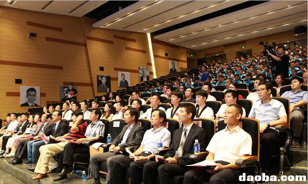
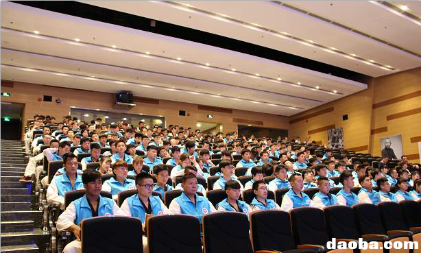
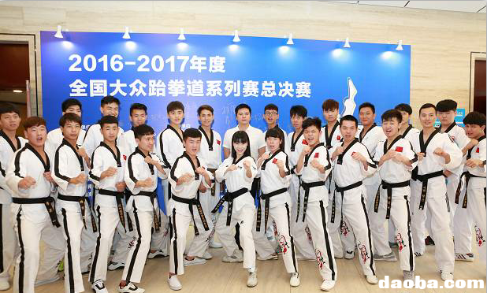
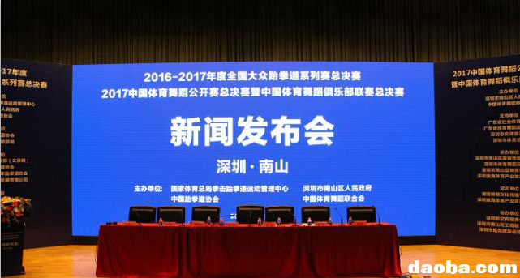

5月23日上午，2016-2017年度全国大众跆拳道系列赛总决赛新闻发布会在深圳市南山博物馆盛大举行。

大赛事将展现国内跆拳道顶级水平，促进文化交流，向全国各地的来宾展现世界级创新之都南山的国际魅力、独特文化和宜居环境。
出席新闻发布会的领导、嘉宾有国家体育总局社体中心四部主任、国家体育总局拳击跆拳道运动管理中心副主任、国家体育总局拳击跆拳道运动管理中心跆拳道部副部长曹涛，南山区区委常委、宣传部长廖子彬以及承办方的代表、赞助企业代表、媒体记者和社会各界代表近300人。
全国大众跆拳道系列赛总决赛花落南山。
跆拳道项目从1994年在中国开展以来，经历了22年的发展和努力拼搏，在悉尼、雅典、北京、伦敦、纽约连续五届奥运会上获得金牌，在竞技体育领域获得了辉煌的成就，是我国的优质体育项目。
在大众跆拳道领域，目前国内练习跆拳道的青少年爱好者达三百多万，建立了裁判、教练、培训师等专业人才队伍，颁布了一系列行业法规制度，全方位地开展了跆拳道的活动。 2016-2017年度全国大众跆拳道系列赛总决赛将于2017年8月16日-19日在南山文体中心体育馆举行。
大众跆拳道系列赛从2015年开始举办，是由国家体育总局拳击跆拳道运动管理中心、中国跆拳道协会创办的群众性跆拳道赛事。
自2015年8月开展以来，历时两年已有超过三万多青少年选手参与，取得了良好的社会效应。2015-2016年度大众跆拳道系列赛在全国14个城市举办了13站系列赛和1个总决赛。
总决赛将使用最先进的电子护具和电子头盔，由中国跆拳道协会大众跆拳道竞赛裁判新闻纪律委员会全面负责赛事的宣传和监督管理，确保比赛过程公平公正公开。开幕式将邀请奥运冠军参加，并通过鼎海体育的爱心捐赠，关爱体育伤病运动员的康复和深圳贫穷外来工子女。